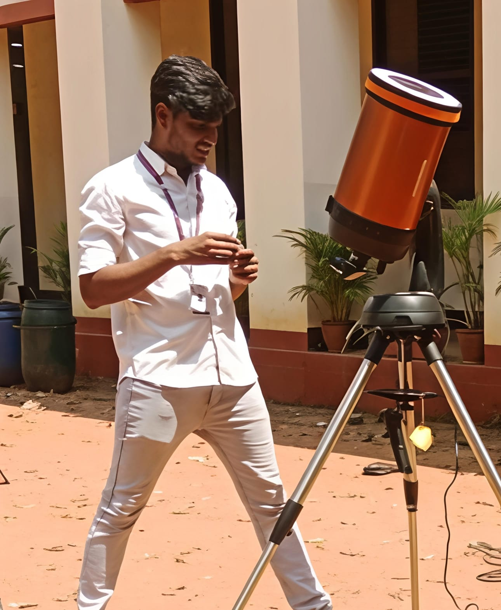

Physics Graduate | Aspiring Astrophysicist

Physics graduate focused on observational and data driven astronomy.
Interested in pursuing research in astrophysics especially. Currently, working on Heliophysics.
You can view or download my full CV here:
Download CV